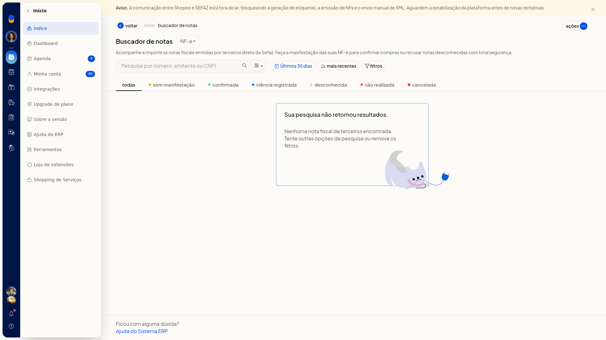
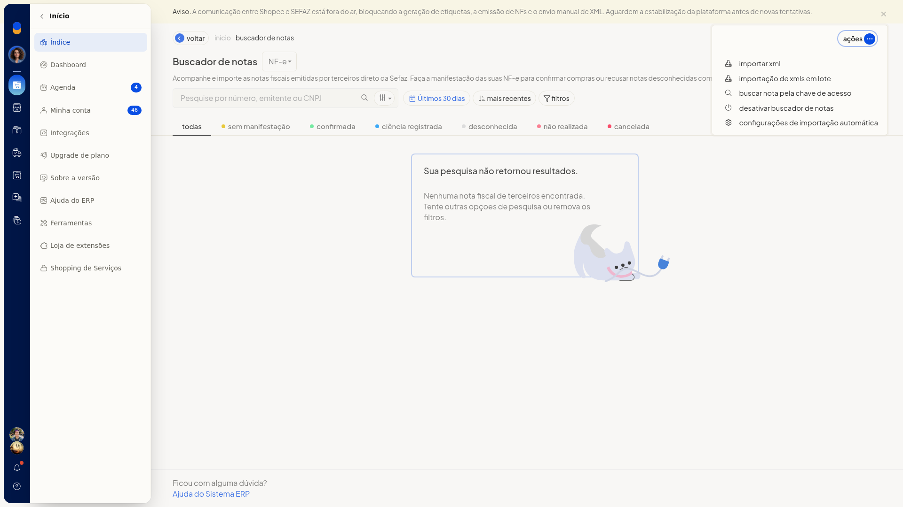

Manifestar notas, buscador de notas e eventos de entrada
Pré-requisitos
- O Buscador de notas só aparece com o certificado digital armazenado no servidor.
- Se o Buscador de notas não aparecer para você, peça acesso ao administrador da conta.
Importante
- A manifestação padrão vale só para a importação automática de NF-e: Ciente da operação ou Operação confirmada. Na configuração de CT-e não há essa escolha.
- Em Escolher individualmente, só os CNPJs listados são importados. Cada fornecedor pode ser refinado por NCM ou CFOP ao editá-lo.
- Os CNPJs da lista de exceções não têm a NF-e importada automaticamente.
Instruções
Acompanhar a manifestação no buscador
-
Acesse Suprimentos > Notas de Entrada.
-
Clique em Buscador de notas.
-
Confira o seletor NF-e e pesquise no campo Pesquise por número, emitente ou CNPJ.
-
Ajuste o período em Últimos 30 dias e a ordenação em mais recentes.

-
Abra filtros e escolha a origem: Notas na Sefaz, Notas importadas ou Todas.
-
Em notas ignoradas, escolha Não exibir, Exibir notas ignoradas ou Exibir apenas notas ignoradas.
-
Use as abas Todas, Sem manifestação, Confirmada, Ciência registrada, Desconhecida, Não realizada e Cancelada para ver a situação da manifestação.
Buscar nota pela chave de acesso
-
No Buscador de notas, clique em Ações.

-
Clique em Buscar nota pela chave de acesso.
-
No campo Chave de Acesso, informe a chave da NF-e.
-
Clique em Continuar.
Configurar a manifestação da importação automática
- No Buscador de notas, clique em Ações.
- Clique em Configurações de importação automática.
- Em NF-e, escolha Todos os fornecedores ou Escolher individualmente.
- Defina a manifestação padrão entre Ciente da operação e Operação confirmada.
- Para excluir um CNPJ da importação automática, use Adicionar CNPJ na lista de exceções.
- Em CT-e, escolha Todos os prestadores ou Escolher individualmente.
Resultado
O Buscador de notas mostra as abas de situação da manifestação das NF-e de terceiros. Se a pesquisa não achar notas, a tela informa que a pesquisa não retornou resultados e que nenhuma nota fiscal de terceiros foi encontrada.
Informações adicionais
O menu Ações reúne outras entradas do buscador
O menu Ações também traz Importar XML, Importação de XMLs em lote e Desativar buscador de notas.